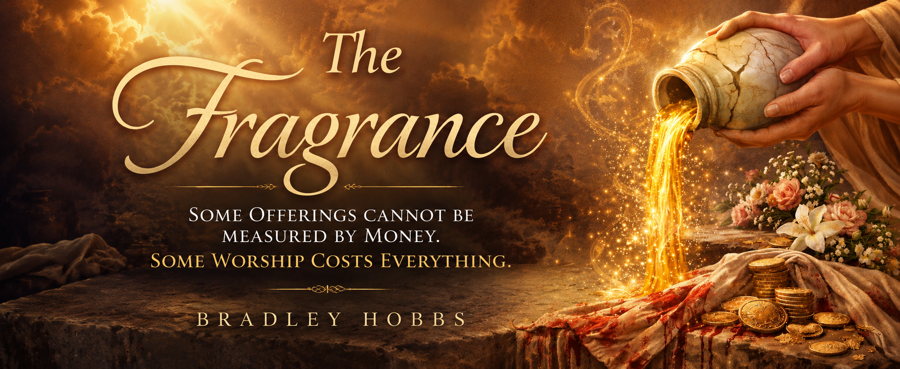

The city moved with its familiar rhythm that evening as traffic rolled beneath glowing streetlights, neon signs reflected against towering sheets of glass, and the rich scent of roasted coffee drifted from the café resting on the corner below. Life continued as usual, unaware of the sacred moment quietly unfolding above the streets. Inside a loft apartment tucked away from the noise, dinner had already begun. Nothing about the gathering appeared extraordinary at first glance. Friends sat around a long wooden table sharing food and conversation beneath warm hanging lights, their laughter rising and falling through the room. Yet beneath the comfort and familiarity rested something deeper, something difficult to explain. A quiet holiness lingered in the atmosphere, almost as though heaven itself had drawn near.
The host, Michael, carried a story few people could hear without remembering. Years earlier his life had nearly been destroyed. Addiction had wrapped chains around his mind and body while sickness left visible reminders of battles fought in silence. Brokenness once followed him everywhere he went, and despair had become a language he understood all too well. Yet grace had found him in places where hope had nearly disappeared. Healing had rewritten his story. Tonight his home echoed with joy that once felt impossible. Laughter filled rooms where silence and pain had once lived.
At the center of the table sat a man whose presence seemed to alter the atmosphere around Him. His name was Joshua. Some called Him a teacher. Others called Him a leader. Those who walked nearest beside Him believed something far greater. Eternity seemed to rest within His words. Peace followed Him into every room. Hope rose wherever He stood. People could never quite explain the feeling, yet everyone noticed the same thing. Life somehow felt different near Him.
Soft light stretched across the loft walls while shadows moved quietly in the corners. Men and women seated nearby had traveled difficult roads beside Him. They had witnessed impossible things with their own eyes. Blindness had given way to sight. Hearts crushed beneath grief had discovered joy again. Miracles had unfolded where despair once held authority. Yet even those closest to Him still could not fully understand what stood waiting just ahead. The evening carried a strange heaviness, as though an unseen mystery rested over the room. Time itself seemed to slow, holding its breath while heaven quietly watched.
Then she entered.
Her name was Elena, and although her footsteps were quiet, determination burned within her eyes...
He is worth everything.
Long after the voices disappeared and long after the evening passed into memory, the fragrance remained.